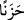
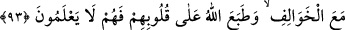

Bu âyet, önceki âyette geçen “iyilik yapanlar (muhsinler)” kelimesine atfedilmiştir.
Yani, “Ne iyilik yapanlara ne de kendilerine binek sağlaman için sana gelen kimselere
bir şey (kınama) sabit olmuş değildir. Sana doğru gelip kendilerine izin vermeni ya da
savaşa götürmeni istediklerinde…” demektir.
Âyette sözü edilenler, Ensar’dan göz yaşlarını tutamayıp ağlayan yedi kişidir. Bunlar
Ma‘kil b. Yesâr, Sahr b. Hansâ, Abdullah b. Ka‘b, Sâlim b. Umeyre, Sa‘lebe b.
Ganeme, Abdullah b. Mugaffel ve Uleyye b. Zeyd’dir. Bunlar Rasûlullah (a.s.)’a gelip:
“Biz sefere çıkmayı adadık, yamalı ayakkabılarla ve dikili pabuçlarla da olsa bizi bir
hayvana bindir, seninle beraber savaşalım.” demeleri üzerine, Peygamberimiz (a.s.):
“(Sizi bindirecek binek) bulamıyorum.” buyurdu. Onlar da ağlayarak geri döndüler.[240]
Bunların Mukarrin’in çocukları olduğu söylenmiştir. Yedi kardeştiler. Hepsi de
Peygamberimiz (a.s.)’ın ashabından olmuşlardı. Sahabe arasında onlardan başka yedi
kardeş yoktu. Kurtubî Tefsîri’nde bu şekilde geçmektedir.
“Sizi bindirecek bir şey bulamıyorum deyince” Yani, sana geldiklerinde ve sen de
“Sizi bindirecek bir şey bulamıyorum.” derken, demektir. “Mâ” edatı, onların Hz.
Peygamber (a.s.)’dan istedikleri âdeten üzerine binilmek için bağışlanan hayvanlara ve
binitlere şâmildir.
Âyette “Yanımda yok” ifadesi yerine, “Bulamıyorum” ifadesinin tercih edilmesi, söze
daha nazik bir üslûp kazandırmak ve isteyenlerin kalplerinin hoş tutulması içindir. Bu
ifadeden sanki Peygamber Efendimiz (a.s.)’ın onların istedikleri şeyi temin etmeyi
sürekli arzu ettiği, fakat bulamadığı anlaşılmaktadır.
“harcayacak bir şey bulamadıklarından dolayı üzüntüden gözlerinden yaş aka aka”
şiddetli bir şekilde boşalarak “dönen” senin huzurundan dönüp ayrılan “kimselerin
aleyhine de” yol yoktur. Onlar da kınanmazlar.
Burada “akma”nın göze isnad edilmesi mecâzîdir. Tıpkı “Oluk aktı” sözünde olduğu
gibidir. Aslında mânâ “gözleri, gözyaşlarını döke döke” şeklindedir. Gözyaşlarının aşırı
bir şekilde aktığını ifade etmek için böyle bir ifade kullanılmış ve böylece sanki gözün
tamamının gözyaşı olup aktığı anlatılmıştır.
“Üzüntüden (
)” kelimesi, gözyaşlarının akmasının sebebini bildirmektedir.
Kâşifî demiştir ki: Ömer, Abbas ve Osman (r.anhüm) bu kimselere azık, yiyecek ve
binit verip götürdüler. Sonra Hak Teâlâ şöyle buyurur: “Bu çeşit insanlar eğer muhalefet
ederlerse ceza ve azar yoktur.”
93. Ancak şu kimselerin (kınanmasına) yol vardır ki, onlar zengin oldukları halde